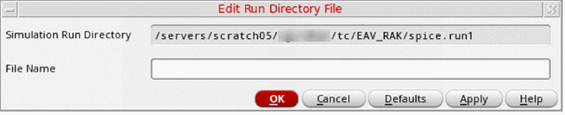

Creating the Input Stimulus in the Control File
You can edit a control file saved within a simulation run directory by creating an input stimulus.
To create an input stimulus in the current simulation run directory:
-
In the schematic window, select Simulation – Stimulus – Edit File.
The Edit Run Directory File form appears.
The Simulation – Stimulus – Edit File command is enabled only after you have used the Initialize command to initialize the simulation environment. -
In the File Name field, specify the name of the simulation run directory file that you want to edit.
The Simulation Run Directory field in this form is read-only. To change this directory, click Cancel and choose the Initialize command again. -
Click OK.
The system brings up a new window displaying the file you specified. -
Edit the file in the syntax of your analysis tool using a text editor.
You can specify all your customizations directly into the control file or you can type SE substitution functions to translate names and merge the customizations in other files. -
Exit the text editor when you have finished editing the file.
The system automatically closes the window.
Related Topics
Sample si.inp File Generated for Cadence SILOS II
Return to top